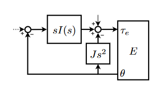
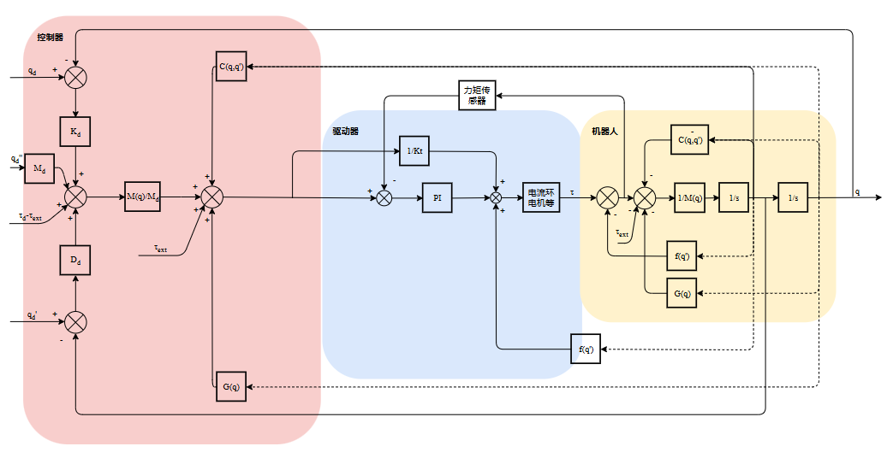
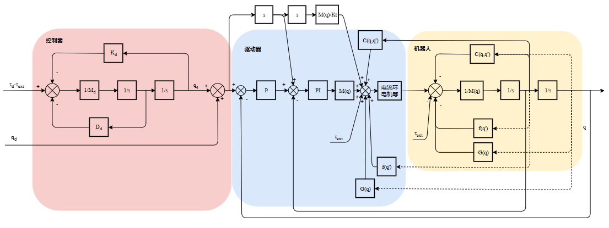

关节柔顺控制方案
1. 机器人控制特点
1.1 物理人机交互（Physical Human-Robot Interaction, pHRI）
pHRI是指人类与机器人在物理上直接接触或互动的过程。这种互动可以是通过直接的触摸、拖动、推动或通过其他方式进行的。

工业位置控制：环境刚度为0（不为0即产生碰撞），关注定位的极限性能，快速和准确。
机器人控制：环境刚度不断变化，需要将环境考虑在系统中，关注任意环境刚度下系统的稳定性和安全性。
pHRI的目标是使机器人能够在与人类的接触中进行安全、有效和自然的交互。其中核心概念有安全性、稳定性、自然交互、适应性。无源性控制是保证安全性和稳定性的重要解决手段。
1.2 无源性控制（Passivity-Based Control, PBC）
无源性指的是系统无法生成超过其输入的能量。在控制理论中，如果一个系统的能量不会增加或仅仅维持在一个稳定水平，则该系统被称为无源的。这种特性可以帮助确保系统的稳定性。
无源=>稳定，稳定≠>无源
Colgate 和 Hogan 的定理针对机械系统（如机器人）与环境接触时的稳定性问题，给出了系统在接触所有被动环境时保持稳定的充要条件。定理的核心结论是：
系统稳定当且仅当交互阻抗 Z(s)=F(s)V(s) 满足：
Z(s)在右半平面（RHP）无极点（即 Z(s) 稳定）
对所有频率 ω，满足 Re[Z(jω)]≥0（即 Z(s) 无源）
PD控制器是一种无源控制器，很容易证明其稳定性，但如果比例增益不高，则稳态误差会很大。由于噪声以及系统控制器的采样率限制，增益不能无限制地提高。而 PID 控制器则允许在不使用高增益的情况下获得更好的低频特性，但对于不同刚性的环境不保证稳定性。
2. 阻抗控制
下发转矩指令，力矩闭环PD控制，套在电流环外。力矩指令通过转矩系数转化为电流，前馈给电流环。驱动器使用CST模式。

3. 导纳控制
下发位置指令，并且加入速度，加速度前馈。驱动器使用CSP模式。

4. SEA关节
弹性将力控问题转化为位置控制问题，从而极大地提高了力的准确性。由于输出力与弹簧的扭曲成比例，所以电机的位置决定了力的大小。由于通过齿轮系控制位置比控制力更容易，因此摩擦、间隙和扭矩波纹的影响得以减少。
控制作用会降低反射惯量，并且弹性起着低通滤波器的作用，过滤冲击负载，保护齿轮箱免受损坏。弹簧还会滤除执行器的输出，限制可实现的带宽。正如上文所讨论的，低带宽控制对于组装等类人任务已足够。
低频时效果优于刚性关节，高频时效果优于弹簧。